A Matthew Effect in Occupational Skill Content
Divergent Diffusion of Cognitive and Physical Skills Reinforces Inequality
Roberto Cantillan & Mauricio Bucca
Department of Sociology | Pontificia Universidad Católica de Chile
The Puzzle
Standard expectation:
- Technological change should spread cognitive requirements broadly
- Lower-status occupations face the strongest pressure to upskill
- Evidence from postings suggests diversification is sharpest at the bottom
What we find:
Cognitive skills diffuse upward, physical skills diffuse downward. Skill change widens the cognitive-physical divide instead of closing it.
From Upskilling Pressure to Realized Change

Pressure to change is not the same as realized occupational skill content.
Whether, how, and for whom skill change occurs depends on an occupation’s position within a relational domain of task similarity, training proximity, and productive complementarity.
We ask: which skills move, and in which direction, relative to the status of the occupations that already hold them?
Two Different Objects: Demand Signals vs. Realized, Directional Change
Job-ad studies (Tong et al. 2025; Han & Cheng 2026)
- Data: employer-side demand signals in job postings — not verified workplace content
- Object: occupation-level vector change (Tong) or within-job skill diversity (Han & Cheng)
- Direction is not signed by the status of a specific source/partner occupation
This paper (O*NET, 2015–2024)
- Data: incumbent/analyst-rated requirements — realized occupational skill profiles
- Object: signed direction of dyadic flow, \(G_{ij} = \sigma_j - \sigma_i\)
- Asks whether skill \(s\) moves toward or away from status, relative to the occupation that already holds it
Demand Signals and Realized Flows Are Different Objects
Job-ad studies
Demanded change within an occupation
This paper
Realized skill movement between occupations
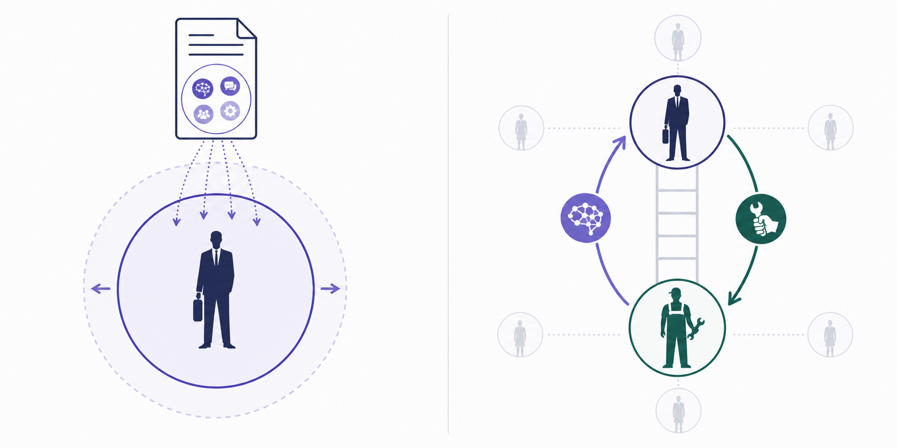
The relational question adds direction:
socio-cognitive skills move upward · sensory-physical skills move downward.
The Architecture We Build Upon
Polarization (Alabdulkareem et al. 2018)
- Skills cluster into two domains
- Socio-cognitive: high education, high wages
- Sensory/physical: lower education, lower wages

Nestedness (Hosseinioun et al. 2025)
- Asymmetric dependencies: some skills “enable” others
- Nested architecture has intensified over time
- Position in hierarchy predicts wages, automation risk

I. DIRECTIONAL SKILL DIFFUSION
Two Elementary Events

We do not observe direct transmission — we model how event hazards vary with profile distance, signed status gap, and skill class.
Theory: Directed Assortative Mixing
We treat skill diffusion as assortative mixing (Newman 2002) — occupations connect preferentially with similar others — but asymmetric with respect to status.
- Symmetric fit (task similarity, training overlap) says a skill can travel between two occupations — it does not say in which direction.
- A nurse is closely tied to physicians by tasks and training, yet a nurse’s odds of adopting a physician’s skill are not the mirror image of a physician’s odds of adopting a nurse’s.
- Diffusion depends on the signed status distance between neighbors: the same relatedness yields different probabilities depending on who ranks higher.
Result: socio-cognitive requirements channel upward; sensory-physical requirements channel downward. Adoption and abandonment compound rather than offset, producing a Matthew effect among occupations.
Mechanisms Behind the Directional Gap
- Emulation: occupations look upward, but not all can absorb what they emulate.
- Task allocation: complex content is retained/deepened where it already sits.
- Absorptive capacity: high-status holders provide scaffolding and legitimacy.
- Credentialist closure: requirements held above become protected.
- Valuation asymmetry: identical content is rewarded differently depending on who holds it.
II. DATA & METHODS
Data
- O*NET 2015-2024: 741 occupations, 160 skill requirements
- BLS OEWS wages + O*NET education and cognitive task content
- About 40M directed diffusion opportunities
- 21.5M adoption dyads
- 18.6M abandonment dyads
Measures I: Diffusion Events
Unit: directed triple \((i,j,s)\): source occupation, target occupation, skill.
Adoption risk set: source \(i\) holds skill \(s\) in 2015; target \(j\) does not. \(Y^{adopt}_{ijs}=1\) if \(j\) crosses RCA \(\geq 1\) by 2024.
Abandonment risk set: source \(i\) and target \(j\) both hold skill \(s\) in 2015. \(Y^{aband}_{ijs}=1\) if \(j\) falls below RCA \(\geq 1\) by 2024.
- Status gap:
- \(\sigma_i\): baseline occupational status from PCA of wages, education, and cognitive content
- \(G_{ij} = \sigma_j - \sigma_i\)
- \(G_{ij} > 0\): target ranks above source | \(G_{ij} < 0\): target ranks below source
Measures I: Identification Strategy
Skill-profile distance: one minus cosine similarity of baseline RCA vectors — nets out ordinary task relatedness
Skill fixed effects: absorb intrinsic diffusibility of each requirement
Source + skill FE and target + skill FE estimated as complementary strategies, since \(G_{ij}\) is linear in endpoint status and both cannot be absorbed at once
Three-way clustered SE by source, target, and skill accounts for network dependence in the triadic data
Measures II: Skill Classes
Crossing domain x specificity yields three functional classes

Domain: Alabdulkareem et al. 2018 · Nestedness/specificity: Hosseinioun et al. 2025
- General socio-cognitive (49 skills): \(c_s\) at/above within-domain median — broad, scaffolding
- Specialized socio-cognitive (48 skills): \(c_s\) below median — narrower, dependent
- Sensory-physical (63 skills): \(c_s < 0\) throughout — high-nestedness cell empirically absent
Directional Gravity Model
For each flow and skill class, we estimate a gravity-hazard model:
\[ \begin{aligned} \eta_{ijs} = \operatorname{cloglog}\,P(Y^f_{ijs}=1) = \, & \alpha_i + \alpha_j + \alpha_s \\ & + \beta^{\uparrow}_{g}\Delta^{\uparrow}_{ij} + \beta^{\downarrow}_{g}\Delta^{\downarrow}_{ij} + \kappa_g \mathbb{1}[G_{ij}>0] \\ & + \delta_g \mathrm{dist}_{ij} \end{aligned} \]
- \(f \in \{\mathrm{adoption}, \mathrm{abandonment}\}\)
- \(g \in \{\text{Spec. SC}, \text{Gen. SC}, \text{Phys}\}\)
- \(\Delta^{\uparrow}_{ij}=\max(0,G_{ij})\); \(\Delta^{\downarrow}_{ij}=\min(0,G_{ij})\)
- Source and target fixed effects are introduced in separate specifications because \(G_{ij}\) is a linear function of endpoint status.
III. DESCRIPTIVE PATTERNS
Adoption and Abandonment Gradients
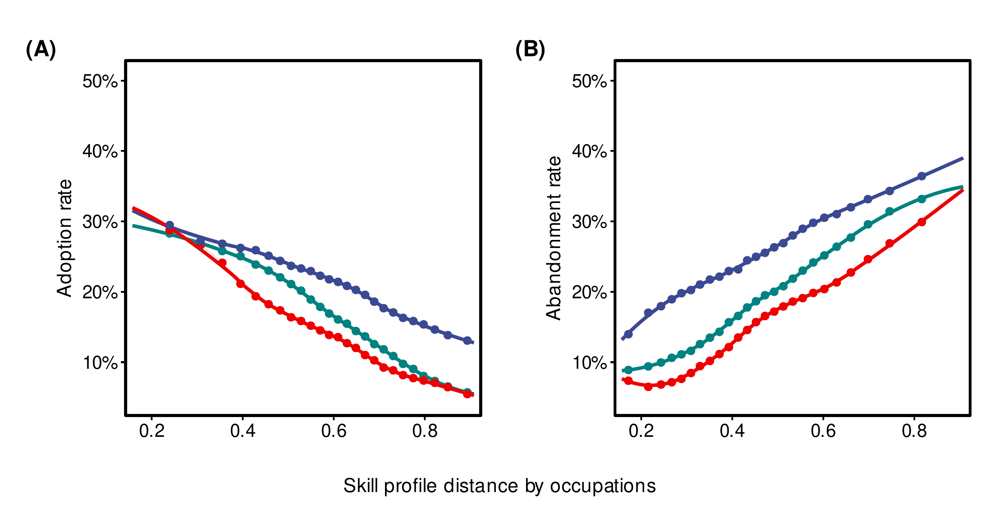
▬▬ General socio-cognitive ▬▬ Specialized socio-cognitive ▬▬ Sensory-physical
Status-Gap Gradients and Flow Networks
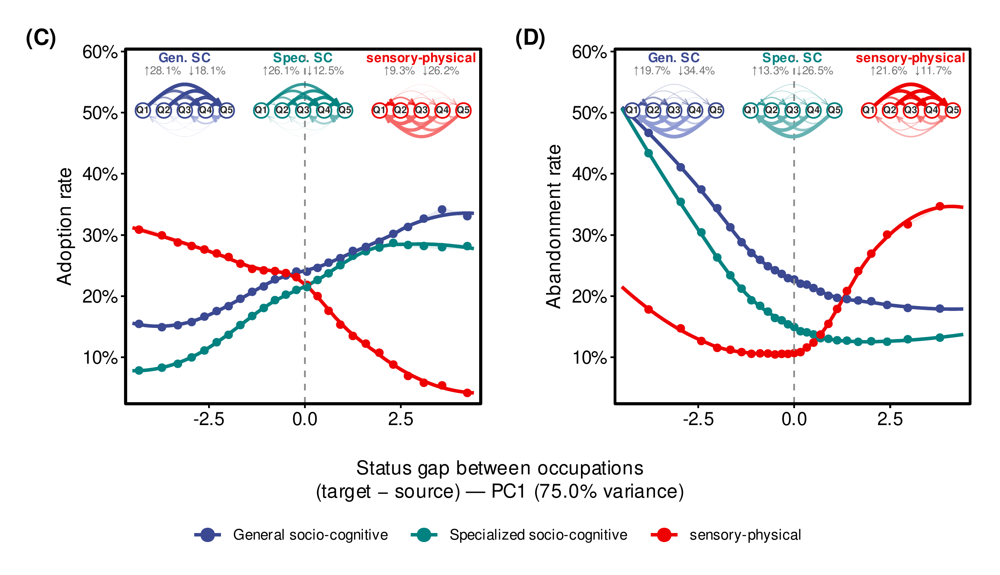
Descriptive Result
- Profile distance matters symmetrically:
- adoption falls with distance
- abandonment rises with distance
- Status gaps matter directionally:
- socio-cognitive adoption rises when target is above source
- sensory-physical adoption rises when target is below source
- abandonment reinforces the same divide
IV. GRAVITY MODEL RESULTS
Fixed-Effects Gravity Estimates
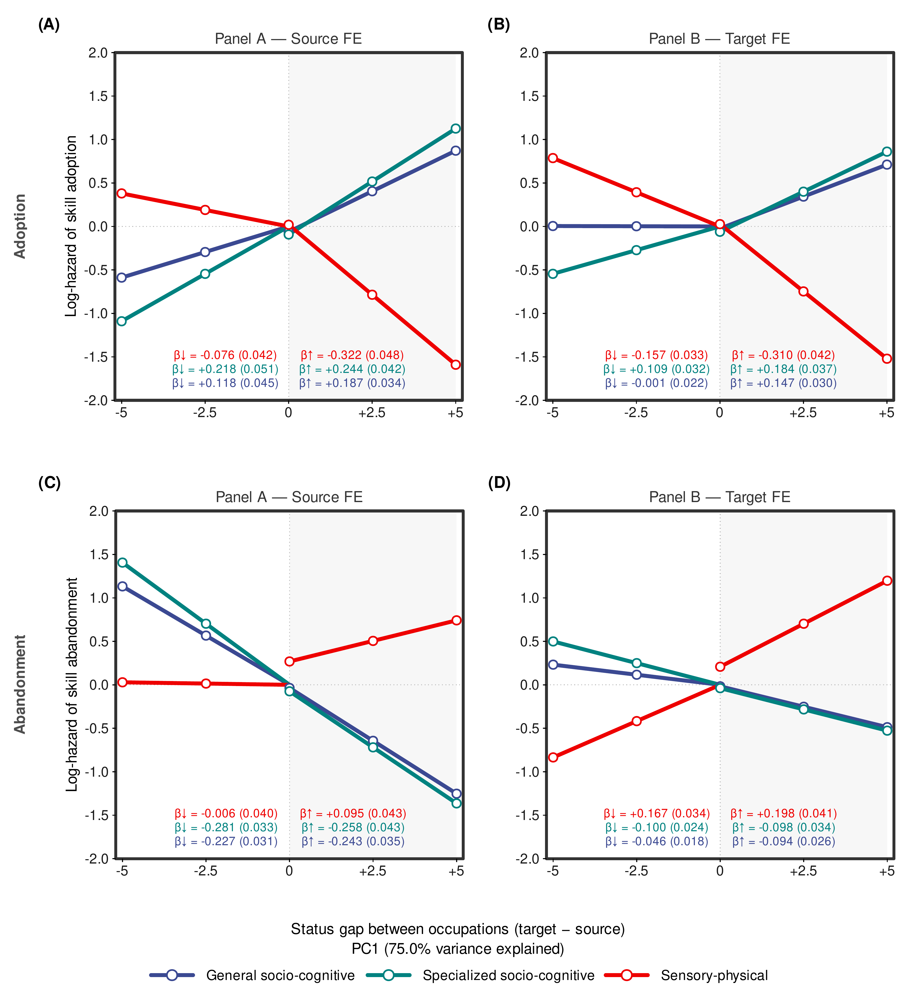
What the Model Shows
Adoption: cognitive skills move up the status gap; physical skills move down.
Abandonment: cognitive skills are shed down the gap; physical skills are shed up.
The pattern survives complementary FE strategies:
- source + skill FE
- target + skill FE
Direction matters beyond profile similarity, endpoint propensities, and skill diffusibility.
From Dyads to Occupational Stratification (I)
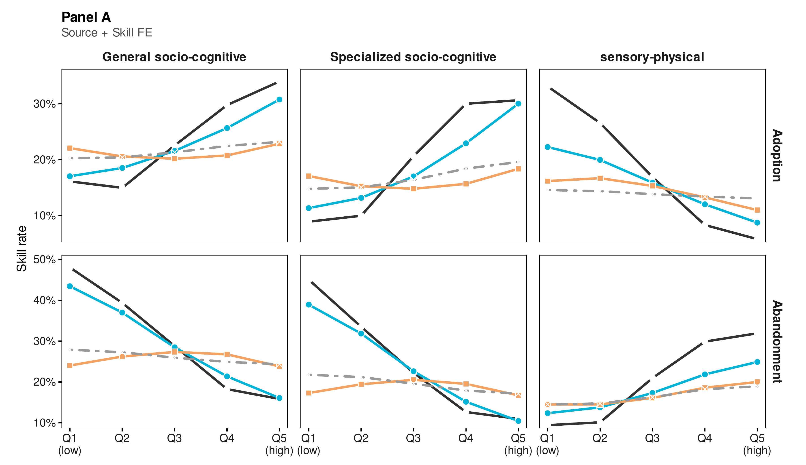
▬▬ Observed ▬▬ Model ▬▬ Symmetric null ╌╌ Distance-only null
From Dyads to Occupational Stratification (II)
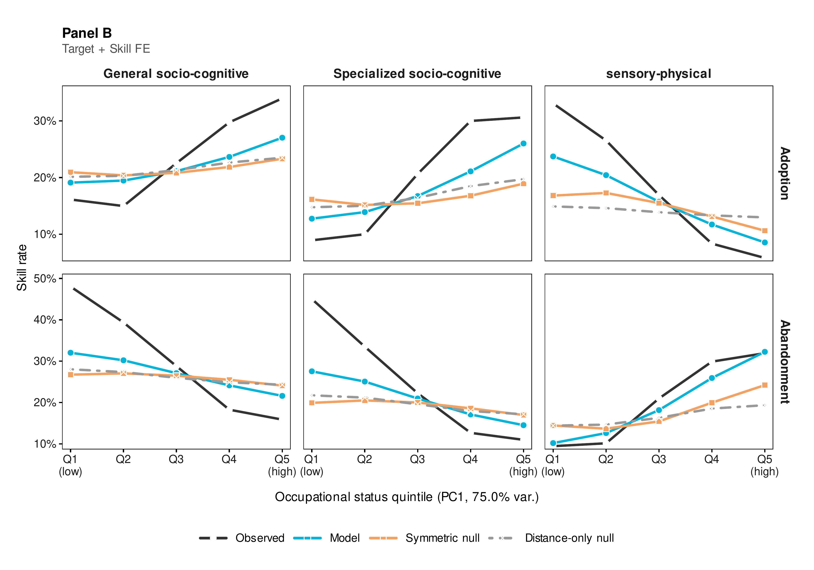
Threats to Inference
Four threats, each targeted by a dedicated check:
- Mechanical index artifact → frozen-denominator / raw-importance re-estimation
- Confounded by stable occupation/skill propensities → fixed effects + permutation test
- Arbitrary measurement choices → thresholds, status index, taxonomy each varied independently
- One disruptive period driving it → replicated across three sub-periods
All four checks preserve the directional asymmetry (full results: backup B6–B12).
Why This Matters
The dyadic directional rule scales up:
Observed macro-gradient Socio-cognitive skills concentrate in higher-status occupations.
Mirror gradient Sensory-physical skills concentrate in lower-status occupations.
Counterfactuals fail Distance-only and direction-blind status models stay close to flat.
Implications: AI and a Compounding Barrier
LLMs expose roughly half the U.S. workforce to task-level substitution; productivity gains concentrate in cognitively intensive tasks
Substitution potential is highest for well-specified physical and routine-cognitive tasks — precisely the skills our results confine to the bottom of the hierarchy
Workers displaced from physical-intensive occupations face a compounded barrier: their skills are both most exposed to substitution and least able to cross into cognitive destinations
Consistent with external mobility evidence: transitions from declining to growing occupations account for only ~5% of moves over two decades
Limitations
Occupational level: we do not observe the organizational decisions behind individual adoptions, nor general-equilibrium responses to shifting demand
Observational design: cannot fully rule out occupations responding independently to a shared shock — though a shock would not by itself reverse direction across cognitive and physical domains
U.S. data only: the magnitude of directional channeling is likely institutionally contingent — credentialing regimes, wage-setting, union density plausibly moderate it; cross-national tests are needed
We identify the direction of skill flow as a function of relative status — we do not adjudicate which relational mechanism (emulation, task allocation, absorptive capacity, credentialist closure, valuation asymmetry) produces it
Conclusion
Main finding:
Skill diffusion is not generalized cognitive upgrading. It is a status-sorted process that pulls socio-cognitive skills upward and sensory-physical skills downward.
Key takeaways:
Two flows, one process Adoption and abandonment compound rather than offset.
Status gap direction matters Knowing the size of the gap is not enough; which occupation ranks higher is decisive.
Matthew effect Occupations already rich in cognitive content gain more, while physical content is retained below.
Thank You
Roberto Cantillan
Department of Sociology, PUC Chile
rcantillan@uc.cl
Paper and Replication: github.com/rcantillan/skill_diffusion
Backup Slides
B1: Formal Definitions
Revealed Comparative Advantage:
\[\mathrm{RCA}(j,s) = \frac{\mathrm{onet}(j,s)/\sum_{s'}\mathrm{onet}(j,s')}{\sum_{j'}\mathrm{onet}(j',s)/\sum_{j',s''}\mathrm{onet}(j',s'')}\]
Event definitions for skill s:
- Baseline specialist: RCA \(\geq 1\) at \(t_0=2015\)
- Endline specialist: RCA \(\geq 1\) at \(t_1=2024\)
- Adoption: target crosses from below to above RCA threshold
- Abandonment: target falls from above to below RCA threshold
Directional gaps:
\[G_{ij} = \sigma_j - \sigma_i\]
\[\Delta^{\uparrow}_{ij} = \max(0, G_{ij}), \qquad \Delta^{\downarrow}_{ij} = \min(0, G_{ij})\]
B2: Skill Taxonomy
Functional domain:
- Louvain communities on the 2015 RCA co-specialization network
- Socio-cognitive: 97 skills
- Sensory-physical: 63 skills
Functional specificity:
\[c_s = \frac{\mathrm{NODF}_{\text{obs}} - \mathbb{E}[\mathrm{NODF}^{(s)}_{\text{rand}}]}{\mathrm{sd}[\mathrm{NODF}^{(s)}_{\text{rand}}]}\]
Three-class taxonomy:
- General socio-cognitive: 49 skills
- Specialized socio-cognitive: 48 skills
- Sensory-physical: 63 skills
The high-nestedness sensory-physical cell is empirically absent.
B3: Key Coefficients
Adoption, Panel A: source + skill FE
| Skill type | Downward slope | Upward slope |
|---|---|---|
| General SC | +0.118 | +0.187 |
| Specialized SC | +0.218 | +0.244 |
| Sensory-physical | -0.076 | -0.322 |
Abandonment, Panel A: source + skill FE
| Skill type | Downward slope | Upward slope |
|---|---|---|
| General SC | -0.227 | -0.243 |
| Specialized SC | -0.281 | -0.258 |
| Sensory-physical | -0.006 | +0.095 |
Cloglog hazard scale. Full tables include both FE strategies and boundary terms.
B4: Complete Gravity Model Derivation
Step 1: Classic Gravity \[T_{ij} = k \cdot \frac{M_i M_j}{D_{ij}^{\gamma}} \quad \Rightarrow \quad \log \mathbb{E}[T_{ij}] = \beta_0 + \alpha_i + \beta_j - \gamma \log D_{ij}\]
Step 2: Triadic Extension \[\Lambda^f_{ijs} \propto \frac{M_i \cdot M_j \cdot S_s}{D_{ij}}\]
Step 3: Asymmetric Frictions \[\Delta^{\uparrow}_{ij} = \max(G_{ij}, 0), \quad \Delta^{\downarrow}_{ij} = \min(G_{ij}, 0)\]
Step 4: Flow-specific distance \[-\log D^f_{ij} = \beta^{\uparrow}_{g}\Delta^{\uparrow}_{ij} + \beta^{\downarrow}_{g}\Delta^{\downarrow}_{ij} + \kappa_g \mathbb{1}[G_{ij}>0] + \delta_g \mathrm{dist}_{ij}\]
Step 5: Full Specification \[\operatorname{cloglog}\big(P(Y^f_{ijs}=1)\big) = \alpha_i + \alpha_j + \alpha_s - \log D^f_{ij}\]
B5: Key Magnitudes
Main directional signs:
| Flow | Socio-cognitive | Sensory-physical |
|---|---|---|
| Adoption | Upward | Downward |
| Abandonment | Shed downward | Shed upward |
Interpretation:
- Cognitive content accumulates at the top through gains and retention
- Physical content accumulates below through gains and retention
- The pattern is visible descriptively and in FE gravity estimates
B6: Robustness Summary
| Test | Specification | Result |
|---|---|---|
| RCA denominator | Frozen 2015 denominator, raw importance | Core signs preserved |
| Source weighting | Frequency weights \(1/n_{js}\) for source multiplicity | 24/24 signs preserved, <12% shift |
| Permutation | Within skill type x source-status quintile | Observed far outside null |
| Thresholds | RCA 0.90, 1.00, 1.10, 1.25 | Directional pattern preserved |
| Status | Wage, education, cognitive content separately | Same asymmetry |
| Skill taxonomy | 10-20% random misclassification | Signs overwhelmingly preserved |
| Periods | 2015-18, 2019-21, 2022-24 | Not driven by one phase |
The asymmetry is not an artifact of RCA construction, status measurement, skill classification, or one historical subperiod.
B7: Robustness — RCA Threshold Sensitivity
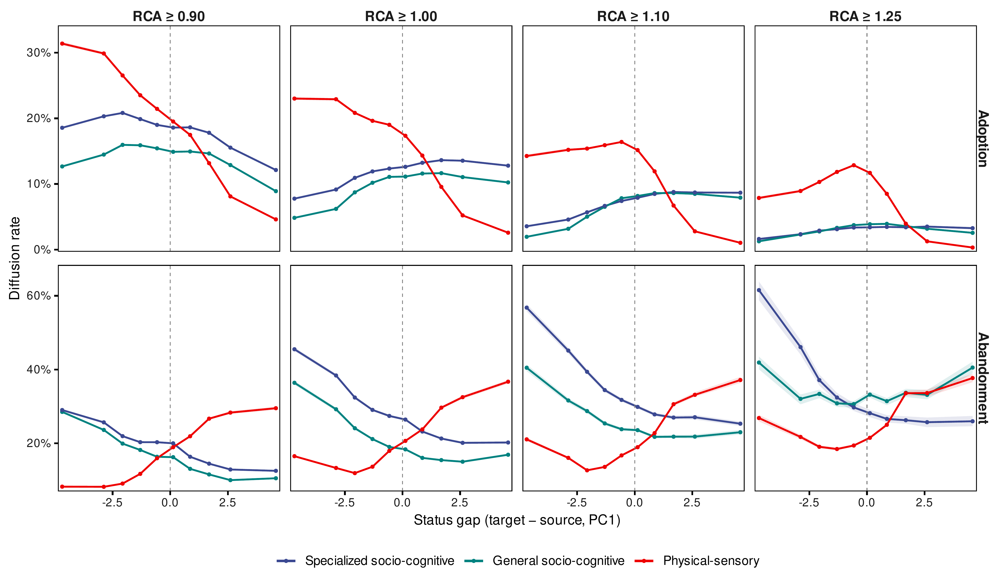
B8: Robustness — Within-Stratum Permutation Test
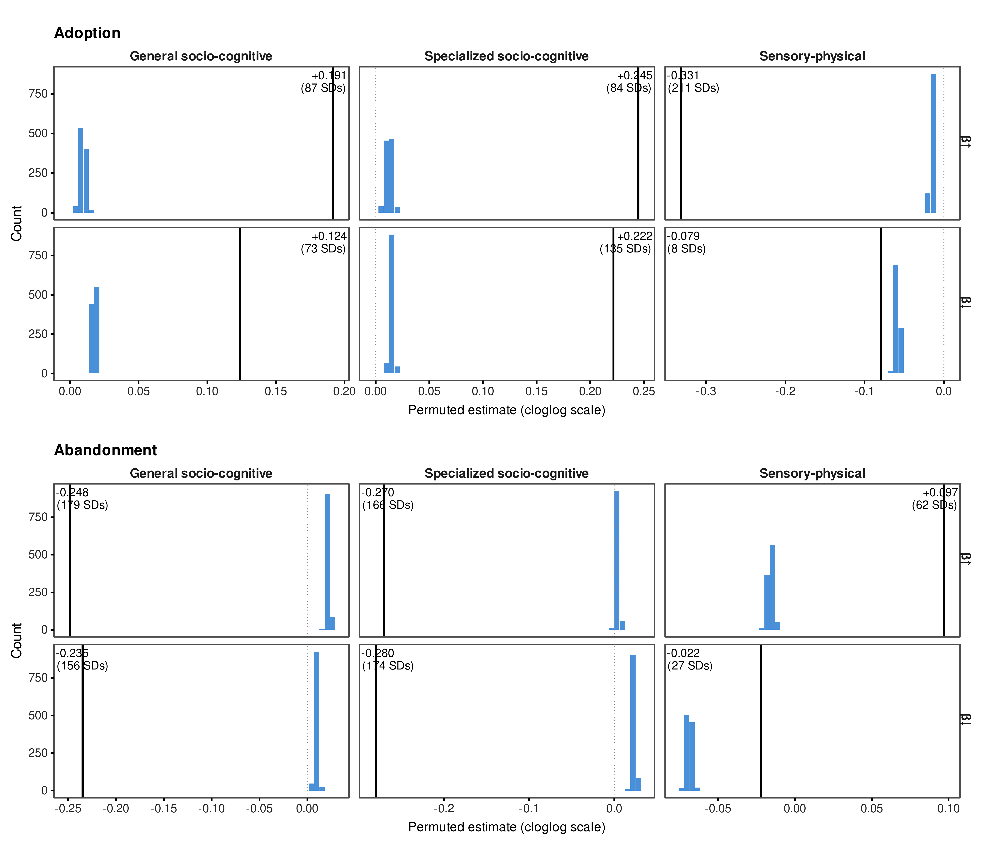
B9: Robustness — Sub-Period Stability
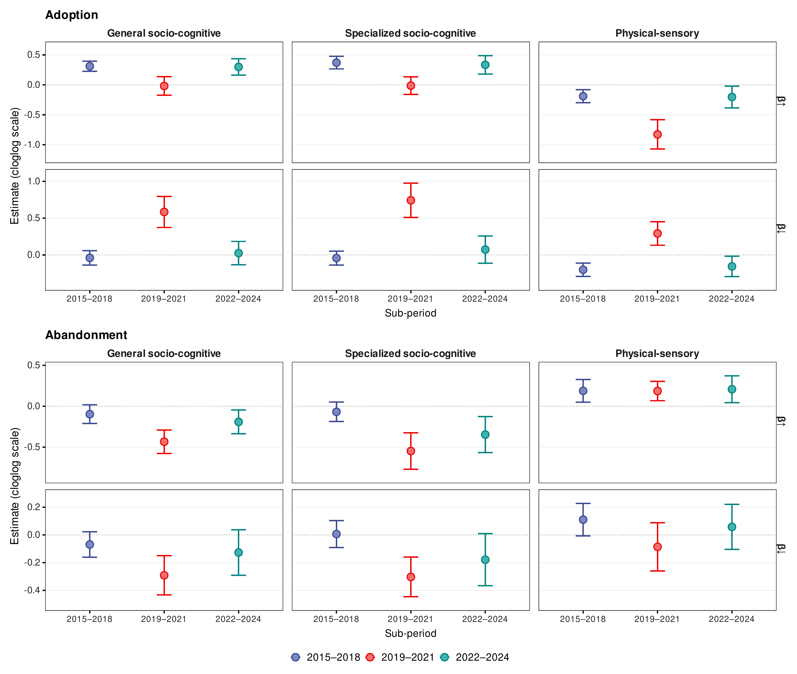
B10: Occupational Status — PCA Construction

B11: Robustness — Misclassification (Adoption)
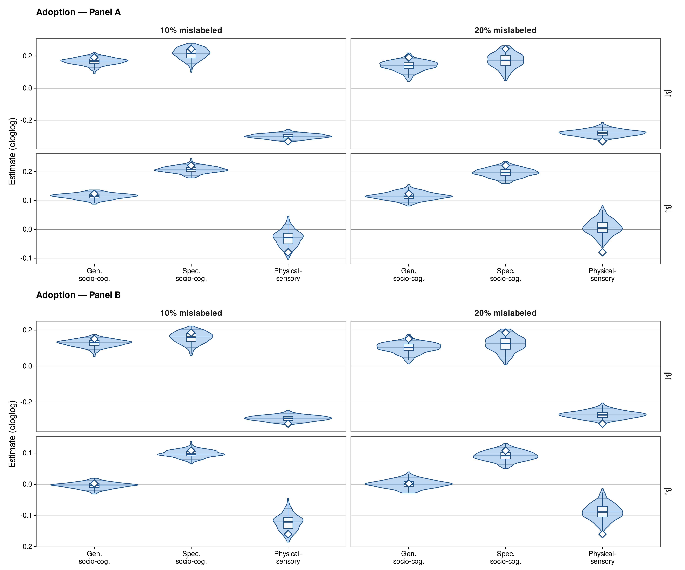
B12: Robustness — Misclassification (Abandonment)
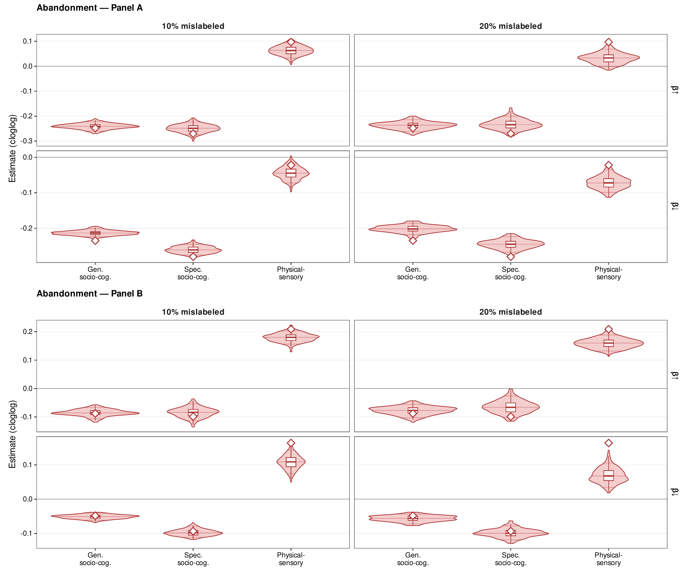
Cantillan & Bucca | RC28 NYU 2026